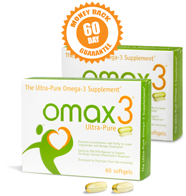

Compre 1 Caja, Consiga 1 Gratis Más 3 Regalos Gratis + Envío Gratuito

Omax3 El Ultra-Pure Omega-3
- Fórmula patentada con 4x EPA para atacar la inflamación y la recuperación muscular
- Alta potencia, 93.9% Omega-3 puro apoya el corazón, las articulaciones, los músculos y la mente
- Empaquetadas individualmente para mayor frescura (¡sin eructos de pescado!)
- Envío Gratuito & Garantía de Devolución de Dinero de 60 Días*
¡Inflamación, Recuperación Muscular y Cognición!

La Primera Línea de Defensa de Mike Golic para la Inflamación Persistente
“Omax3® Ultra-Pure es mi primera línea de defensa contra la inflamación persistente, la salud del corazón, y para mantenerme atento, enfocado y lleno de energía. Tire todas esas otras fórmulas de aceite de pescado que apestan, y use el mejor aceite de pescado Omega-3 que hay – Omax3.”
Kristy Kowal, Nadadora Olímpica Utiliza Omax3 para la Recuperación
“Como nadadora olímpica, empujo mi cuerpo más allá de sus límites. A veces estoy nadando hasta 55 millas por semana. Omax3® mantiene la inflamación fuera de mis articulaciones y músculos. Y mi mente se mantiene atenta y enfocada. Conozco mi cuerpo. Me siento increíble al tomar Omax3 ® tanto mentalmente como físicamente.”

¡El Dr. Joseph Maroon Revela su Secreto Antienvejecimiento!
“A los 74 años, me dolían las articulaciones. He encontrado Omax3® esencial para mantener mi cuerpo ágil y libre de dolor. También apoya mi cerebro, manteniéndome fuerte y enfocado. ¡Es mi arma secreta para desafiar mi edad, ya que acabo de terminar mi quinto Iron Man en Hawái y nunca me he sentido mejor!” *
¿Cuánto Omega-3 está realmente en su aceite de pescado?
Ponga la marca de aceite de pescado de Omega-3 de venta superior en el congelador durante la noche. *Después ponga Omax3® softgel en el congelador durante la noche.
¡Verá una diferencia! El aceite de pescado de venta superior estará nublado, incluso un blanco sólido. Omax3® se quedará claro porque es 93.9% omega-3 puro.
¿Qué prefiere poner en su cuerpo? Obtenga más del Omega-3 que desea (y paga) con Omax3.
Omax3® es la opción clara
¡Tome La Prueba del Congelador™ y vea por usted mismo! La marca de aceite de pescado de venta superior *
La marca de aceite de pescado de venta superior *
Garantía de Devolución de Dinero de 60 Días
¡Pruebe Omax3® durante 60 días! ¡Si no está satisfecho, no esperamos que usted pague! *
Desarrollado por científicos afiliados a la Universidad de Yale
“Los científicos que desarrollaron Omax3, sabían que el secreto para desbloquear los beneficios de salud de tomar aceite de pescado se deriva de los ácidos grasos Omega-3. Se dedicaron a desarrollar una prima Omega-3 de calidad farmacéutica con el 93.9% de Omega-3 activo.”
¡Cuando se trata de Omega-3, si usted no está tomando Omax3, simplemente no está tomando lo mejor!
Los Médicos Recomiendan Omax3

“Recomiendo Omax3 a todos mis pacientes que sufren de dolor en las articulaciones y la inflamación. De todos los suplementos de omega-3 en el mercado solo recomiendo Omax3 debido a su pureza, concentración y eficacia”.
-Dr. Joseph MaroonNeuro-cirujano, experto nutricional, Tri-atleta, y autor del libro “Fish Oil- The Natural Anti-Inflammatory”